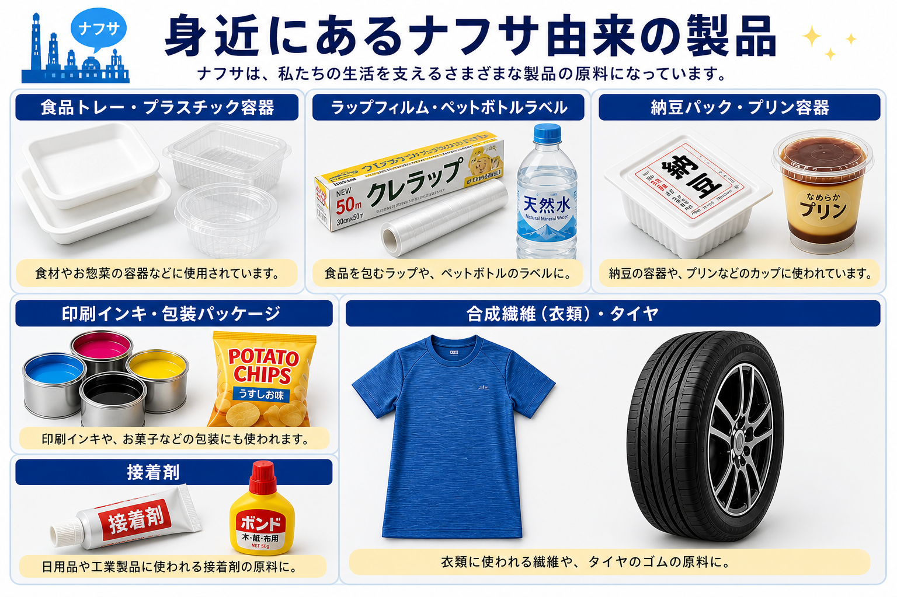

節約モードのGWと、
値上げと品薄の連鎖
GW予算は1人当たり¥27,660、前年比-5.4%。23年以降で最も低い水準だ。「特に予定なし」と答えた人は41.2%と過去4年で最高。池袋の金券ショップでは在来線・新幹線チケットの売れ行きが過去最高、楽天市場では4月の自転車・サイクリング用品が前年比+1割、温浴施設では重油不足を受けて「水風呂への切替」や「設定温度1度ダウン」が検討されている──家計は明確に「節約モードのGW」に入った。
同じ4月末、メーカー側でも値上げや品薄の発表が続いていた。ミツカンが納豆19品の6月値上げを発表（6〜20%）。ある中堅食品メーカーは容器調達のめどが立たず、5月のプリン販売休止を検討。別の中堅飲料メーカーは、商品名や原材料を印字するインキが手当てできず、15品のラベルから印字を消した──。
家計の節約と、工場の値上げ・品薄。これらすべてが同じ原因で起きているわけではない。物価高は本来、人件費・物流費・小麦や油脂などの原材料高が積み重なった、複数要因の合算だ。25年のうちに広範囲な値上げが一巡し、家計の購買力が下がった状態が下地にある。
そこに2026年4月以降、新しい変数が加わった。原油から生まれる「ナフサ」と呼ばれる原料の不足である。中東情勢の悪化──ホルムズ海峡の事実上の封鎖──を引き金に、容器・フィルム・インキ・合成繊維といった「目に見えにくい原料」の調達が一気に細り始めた。本稿は、このナフサの動きを軸に、すでに走っていた値上げの流れがどう増幅されているか、そして家計にこれから何が起きるのかを順に確かめていく。
消費者の動き
──節約モードのGW
まず、4月末の家計の動きを数字で押さえておく。調査会社インテージによれば、2026年GWの1人当たり予算は¥27,660。前年比-5.4%で、23年以降で最も低い。一方、「GWの予定は特にない」と答えた人は41.2%と前年比+4.7ポイント、過去4年で最も高い。株高による資産効果や賃上げの恩恵を受けた人ばかりではない実態が、数字に出ている。
前年比-5.4%／4年最低
4年で最高（インテージ）
外に出る人は、移動コストを徹底的に削る。池袋の金券ショップ「J・マーケット池袋東武ホープセンター店」では、西武池袋〜西武秩父のチケットがまとめ買いで売れ、過去最高の売れ行きとなった。駐車場シェア大手akippaの調査では、26年GWで「抑えたい出費」のトップは「ガソリン代や高速道路料金」（53.7%）。
旅行に出る人も、移動を控える設計に流れている。ホテルニューオータニ幕張の「GWファミリーステイ」は予約数が前年比8倍。ホテル内のレストランやプレイランドで一日中過ごせるプランで、近隣からの予約が中心だ。楽天トラベルでは、館内利用料・飲食代込みの「オールインクルーシブ型」予約がGW期間で前年比+4割。「移動より滞在」「外食より館内」が、コストを抑えつつ満足を得る選択として選ばれている。
家で過ごす人も多い。共通ポイント「Ponta」運営のロイヤリティマーケティング調査では、GWの過ごし方として最も多かった回答が「掃除・片付け」（37%）。ダスキンのGWエアコンクリーニング受注は前年比+7割、楽天市場の掃除用品売上は4月に前年比+3割、ハンズの掃除用品は前年比+4割で推移。ハンズではパズル・ボードゲームの売れ行きも前年比+2割。「家で楽しむ」消費が、節約と気晴らしを兼ねる選択になっている。
ナフサとは何か、
いま価格に何が起きているか
GW消費を圧迫しているのは原油高だが、それと並行して、別の形で小売に効き始めている原料がある。それが、原油から精製される「ナフサ」だ。
ナフサ（粗製ガソリン）は、原油を蒸留・精製する過程で、ガソリンや灯油、軽油と一緒に出てくる留分の一つ。これを高温で熱分解すると、エチレンやプロピレン、ベンゼンといった「基礎化学品」が生まれる。そこから合成樹脂・合成繊維・合成ゴム・各種フィルム・インキ・接着剤・塗料が作られる──つまり、ナフサは石油化学品全体の出発点だ。

国内のナフサ使用量は、約4割が国産、約6割が輸入。輸入ナフサの主要ルートは中東で、ペルシャ湾とアラビア海をつなぐ「ホルムズ海峡」を通る。世界の海上原油輸送の約2割がここを通過する重要な海上交通路で、4月以降この海峡の事実上の封鎖が進み、ナフサの輸入が滞り始めた。
スポット価格とは、長期契約に基づかず、その時々の市場で随時取引される価格のこと。短期的な需給を即時に映す指標で、原料コストの変化を最も早く反映する。そのスポット価格の動きを追うと、いま起きていることがわかりやすい。2025年11月〜2026年1月のナフサのスポット価格は600ドル前後で推移していた。2月末、米国・イスラエルがイランを攻撃したことを機に、価格は急騰。一時1,200ドルとほぼ2倍に達し、足元も1,000ドル前後で推移している。為替も円安基調が続く。
イラン攻撃を機にほぼ倍
¥120,000台
Q4'25 → Q2'26予測
国産価格上昇率（過去最大）
国産ナフサの価格は輸入価格の平均と連動する。25年10〜12月期および26年1〜3月期は、対象期間が中東情勢の悪化前だったためほぼ横ばいで、1キロリットル¥65,700前後で推移した。しかし、26年4〜6月期の国産価格は7月末に確定する見込みで、業界の見立ては「2倍弱の¥120,000台」（石油化学コンサルタント、日経取材）。価格水準・上昇幅とも過去最大となる。先物で手当てしていたナフサが届かず、割高な期近の商品で輸入を補わざるを得ない構図も影響している。
小売とメーカーの
現場で起きていること
価格の波はすでに、店頭と工場の両方に届き始めている。
食品・飲料メーカー、飲食店など712社で構成する国民生活産業・消費者団体連合会（生団連）が4月27日に発表した緊急調査では、ナフサ不足の事業への影響時期について「すでに発生している」と答えた企業が44%にのぼった。「3カ月以内に影響が出る」も31%。回答企業の77%がナフサ由来の原材料を容器・包装に使用しており、即座の代替は難しい構造になっている。
食品・飲料メーカー（生団連）
材料を使用（同調査）
具体的な値上げが連日発表されている。商品側では、ミツカンが納豆19品を6月から6〜20%値上げ（看板の「金のつぶ たれたっぷり！たまご醤油たれ3P」は¥235→¥281）、山崎製パンが7月1日出荷分から食パン・菓子パン・和洋菓子の計306品目を値上げ（食パン類62品目で平均6.6%）。
包装資材側でも値上げが連鎖している。食品トレー大手のエフピコは、6月1日出荷分から全製品を20%以上値上げ。三菱ケミカルが食品包装用フィルム「ダイアミロン」を4月21日出荷分から2割超値上げ、DIC子会社のDICグラフィックスが食品包装インキ・製缶用塗料を30%以上値上げ、artience（旧東洋インキ）も食品包装・紙食器インキで20%以上の値上げに踏み切った。
値上げに至らない、もしくは値上げで吸収しきれない局面では、商品設計そのものに手が入り始めている。中堅飲料メーカーは5月下旬から、自社・委託生産の乳酸菌飲料15品について、商品名や原材料の容器印字を取りやめる。「手作業でシールを貼る案も出たが、大量生産では物理的に不可能だった」（同社幹部）。複数個を束ねる透明フィルムには印字を残す形で、最低限の表示を確保する。
販売そのものが止まる動きも出てきた。全国の小売店でプリンを展開する中堅食品メーカー幹部は、日経の取材に「5月上旬からプリン容器が納品されるか決まっていない。入ってこなければ販売休止する」と答えている。中食企業は容器メーカーから4割の値上げを通告され、「（危機に乗じた）便乗値上げではないか」と訴える声も上がる。
秋以降の見通し
──「第二波」のスケール
ここまで見てきた値上げは、いわば「第一波」だ。次に控える「第二波」は、7月末に確定する4-6月期の国産ナフサ価格（業界の見立てでは2倍弱の水準）が反映される、秋以降の動きを指す。
見通し（帝国データ）
主力事業縮小」（同調査）
（東京商工リサーチ／4,994社）
帝国データバンクは4月30日に公表した食料品の価格動向調査で、「早ければ今夏中、遅くとも秋ごろに広範囲な値上げラッシュ再燃の可能性が高い」とし、26年通年の値上げ品目数を「最低でも1万品目以上」と見通している。同社が4月9日に発表した原油高アンケートでは、原油高がいつまで続くと主力事業の縮小につながるかとの問いに、食品企業の56%が「半年未満」と答えた。値上げ第二波が来る前提で、影響の長期化を企業自身が織り込み始めている。
供給側の体力は痩せている。東京商工リサーチが食品メーカー4,994社の25年業績を調査したところ、売上は前年比+3%の24兆2,824億円とコロナ後5年で最高だったが、利益は-10%の8,806億円。原材料高に伴う値上げが売上を押し上げる一方、人件費や物流費のコスト上昇分をまかなう値上げまでは踏み切れず、収益を圧迫している。25年度の食品メーカーの倒産は168件と前年比+14%。価格転嫁が困難な中小・零細ほど、賃上げ負担も重くのしかかる。
第二波が来る場面では、企業は値上げだけでは吸収しきれない。パッケージ簡素化、販売休止、内容量の調整、流通チャネルの絞り込みといった「価格以外の調整」が、より広い範囲のメーカーに波及していく。
ここ1年、安いものに人が集まり、中くらいの価格帯（中間価格帯）が苦しんできた。これは小売の構造変化として続いてきた流れだ。ナフサ不足はこの流れの上にさらに変化を重ねる──短期では「安いはずだった廉価帯（韓国コスメ・PBなど）の値上げ」を、中期では「廉価帯の供給そのものが細る」可能性をもたらす。値上げ第二波は、棚と家計の風景をもう一段書き換える。